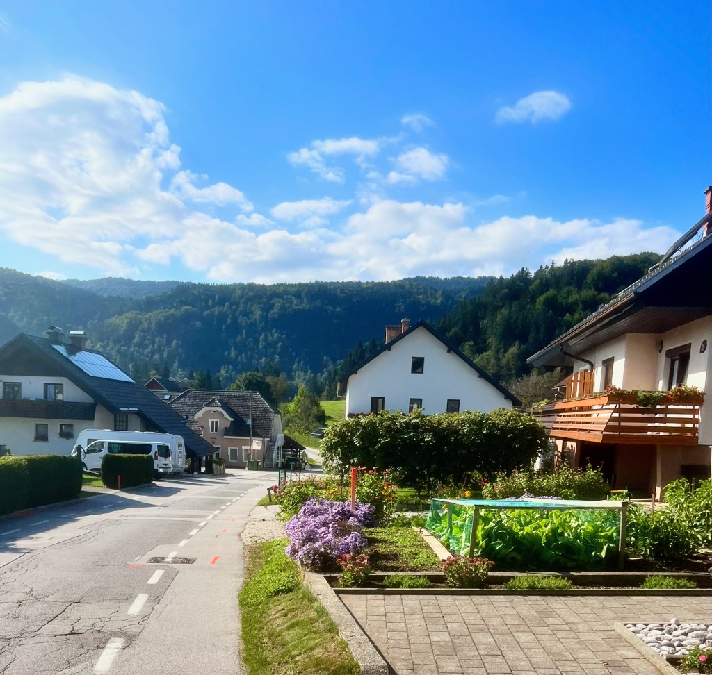
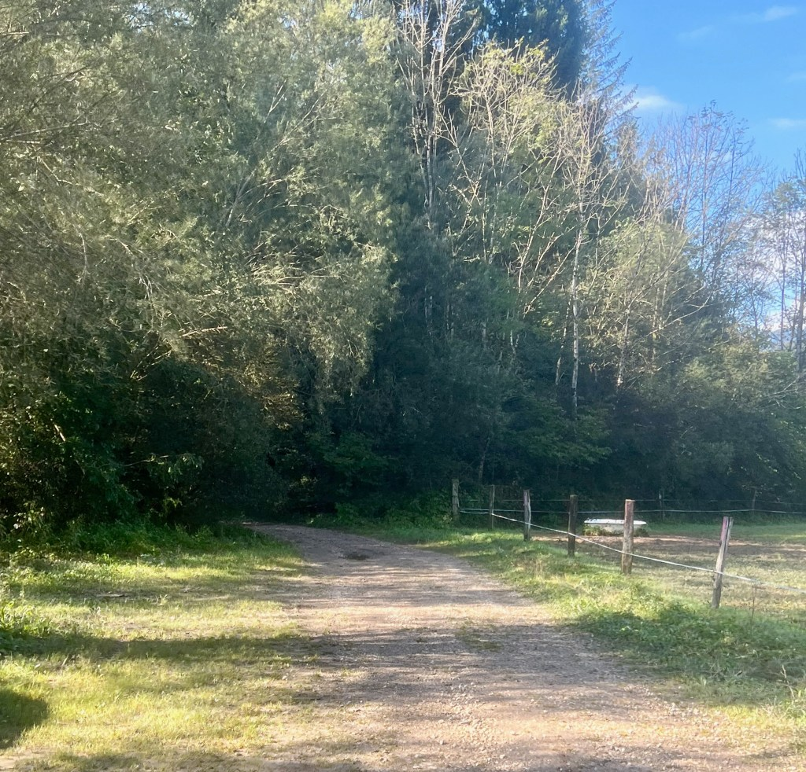

At a Glance
Route: Bled to Talez and optional Tolsti Vrh extension
Distance: Around 7 miles round trip
Elevation Gain: About 1,854 ft
Difficulty: Moderate, with optional shorter variations
Bled is full of scenic routes, from lakeside walks to deeper alpine trails. This one stands out because it is easy to start directly from town, with no car required.
Talez is known for open views over Lake Bled and the surrounding mountains, and the trail gives a mix of forests, farms, and quiet ridgelines.
Start by walking south from Bled toward Ribno. It is a calm road section with little traffic and good visibility. If you want to shorten the day, you can also take a bus from Bled toward Radovljica and begin closer to the trail area.

From Ribno, continue south toward the Sava Bohinjka bridge, then follow signs to Talez as you head into the forest.

The trail is well marked with red-and-white markers on trees. The initial climb is steady but manageable, with lots of beech and fir shade.
Around the upper section, there is a fork where both paths eventually reach the Talez road. The left option is gentler and clearer, while the right can be rougher with some scrambling.
Koca na Talezu is a wooden mountain lodge with broad valley views and simple traditional food. It is a great place to pause, eat, and take in the panorama across Lake Bled.
The lodge area is very family friendly, with animals nearby and enough space to relax before deciding whether to continue to the summit extension.
If you want a longer route, follow signs toward Tolsti Vrh. The extra climb is modest and adds quieter trail sections plus peekaboo mountain views.
A GPS track is useful for confidence, though trail signage is generally clear.
On the return, you pass streams, pastureland, and small villages on your way back toward Bled. Keep left toward town as you approach the lower roads and skirt Straza Hill on the final stretch.
It is an excellent half-day outing when you want a quieter mountain route without leaving the Lake Bled area.